Next: Maximum distance MPC. Up: User-defined nonlinear equations Previous: User-defined nonlinear equations Contents
This MPC is used to apply a rotation to a set of nodes. An important application constitutes rotations on shell and beam elements, see Sections 6.2.14 and 6.2.33. The rotation is characterized by its size (angle in radians) and its axis (normal vector). All nodes participating in the rotation should be listed three times (once for each DOF). The user must define an extra node at the end in order to define the size and axis of rotation: the coordinates of the extra node are the components of a vector on the rotation axis, the first DOF of the node is interpreted as the size of the rotation. This size can be defined using a *BOUNDARY card. Applying a mean rotation implies that the mean of the rotation of all participating nodes amounts to a given value, but not the individual rotations per se. The complement of the mean rotation is the torque needed for the rotation. By selecting RF on a *NODE PRINT or *NODE FILE card this torque can be saved in the .dat or .frd file. Conversely, instead of specifying the mean rotation one can also specify the torque (specify a force with *CLOAD on the first DOF of the extra node) and calculate the resulting mean rotation.
The more nodes are contained in a mean rotation MPC the longer the nonlinear equation. This leads to a large, fully populated submatrix in the system of equations leading to long solution times. Therefore, it is recommended not to include more than maybe 50 nodes in a mean rotation MPC.
Example: *NODE 162,0.,1.,0. *MPC MEANROT,3,3,3,2,2,2,14,14,14,39,39,39,42,42,42, 50,50,50,48,48,48,162 .. *STEP *STATIC *BOUNDARY 162,1,1,.9 .. *END STEP
specifies a mean rotation MPC. Its size is 0.9 radians = 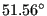 and the global y-axis is the rotation axis. The participating nodes are 3,2,14,39,42,50 and 48.
Example files: beammr, beammrco.
The theory behind the mean rotation MPC is explained in [19], Section
3.6, in case
that all nodes are lying in a plane orthogonal to the rotation axis. If this
is not the case, the derivation in [19] is not correct and has to be
extended. Indeed, for the general case
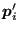 and
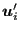 in Equation (3.98) of that reference have to be replaced by their projection
on a plane orthogonal to the rotation vector
 . The projection
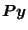 of a vector
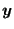 is given by:
. The projection
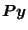 of a vector
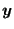 is given by:
| 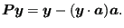 | (651) |
Defining 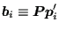 Equation (3.101)of the reference has to be replaced by (no implicit summation in this section)
| 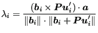 | (652) |
(recall that the vector product of a vector with itself
vanishes). 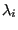 is the sinus of the angle between
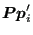,
which is the projected vector from the center of gravity of the nodal set for which the
mean rotation MPC applies to one of its nodes i, and
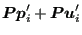, which is the projection of the vector connecting the deformed position of the center of gravity with the deformed
position of node i. The mean rotation in the mean rotation MPC is
supposed to be equal to a given angle  , i.e. the equation to be satisfied is:
, i.e. the equation to be satisfied is:
| 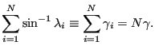 | (653) |
In order to find the coefficients of the linearization we concentrate here on the derivation of 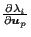. One readily finds the following relationships:
| 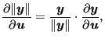 | (654) |
| 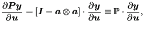 | (655) |
| 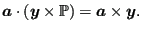 | (656) |
Furthermore, since 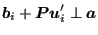 one obtains
| 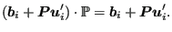 | (657) |
Finally, since (Equation (3.96) of the reference)
| 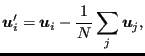 | (658) |
one further finds
| 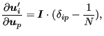 | (659) |
where
 is the unit second order tensor. Using the above formulas one arrives at
is the unit second order tensor. Using the above formulas one arrives at
| 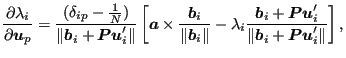 | (660) |
and
| 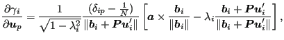 | (661) |
which replaces Equation (3.109) of the reference.